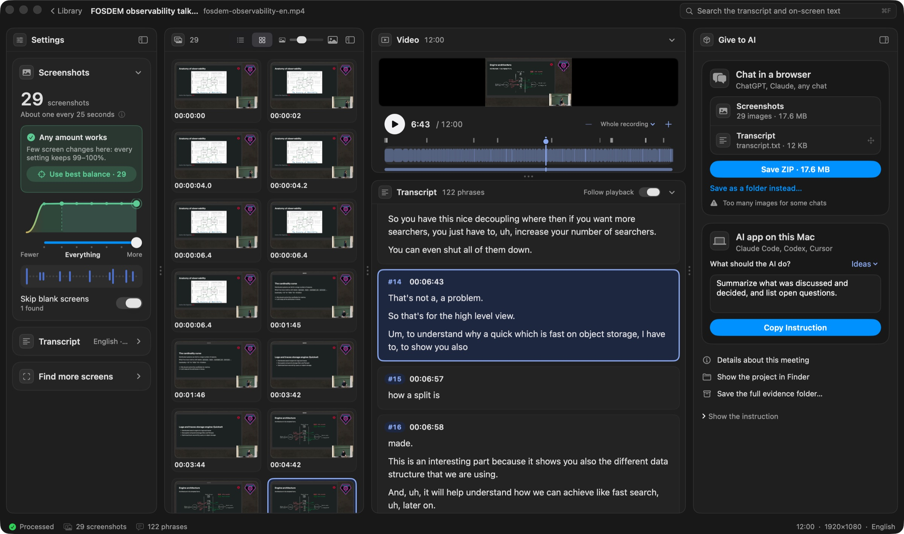
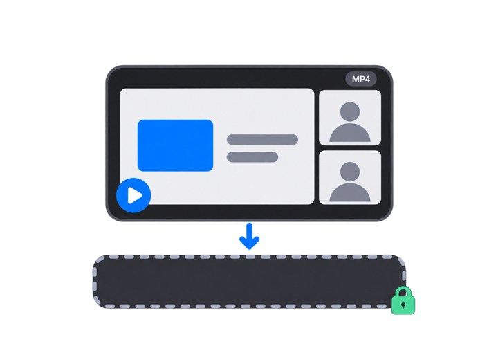
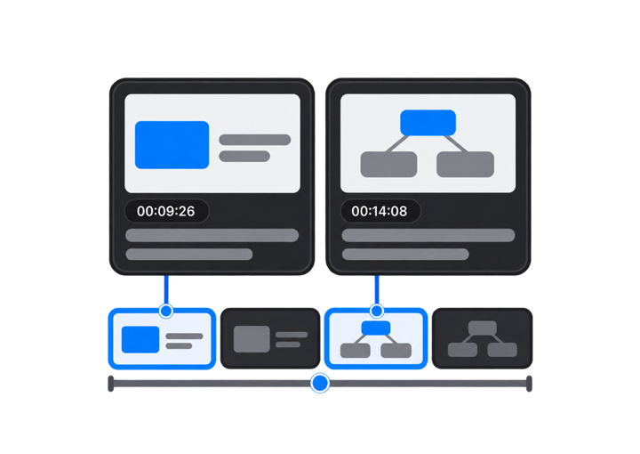

Get a meeting ready for AI
The key screenshots with exact times, and the transcript under each, packed for ChatGPT, Claude or any AI.
Download for Mac
Free
macOS 14 or later
Apple silicon (M1 and newer)
Version 0.1.2 · about 6 MB
First time on a Mac? Here is how to open it.

How it works
Three steps

1Drop a recording
From Teams, Zoom, Meet or Loom. MP4 or MOV.

2Check the result
Screenshots with times, and what was said under each.
3Give it to your AI
One ZIP for a chat, or one instruction for an AI app.
Install
Open it the first time
- Open the downloaded file and drag Meetiline to Applications.
- Open Meetiline. If macOS says it can’t check it for malware, close that message.Meetiline is not yet signed with an Apple Developer ID, so this message is expected, once.
- Open System Settings › Privacy & Security, scroll down and press Open Anyway.Then enter your Mac password. After that it opens like any other app.
- Press Download next to Speech model (874 MB, once). Then drop a recording.Screenshots work without it; the transcript needs it. It works offline afterwards.

If the transcript doesn’t start
Rare, and takes a minute. You use Terminal, the app that comes with every Mac: just copy and paste.
- Quit Meetiline. Then open Terminal: press ⌘ Space, type Terminal, press Return.
- Press the button below to copy the line, click in the Terminal window, press ⌘ V, then Return.
xattr -dr com.apple.quarantine /Applications/Meetiline.appNothing appears when it works. Close Terminal and open Meetiline again.
Privacy
Everything stays on your Mac
On your MacSpeech is recognized locally. No accounts, no analytics.
Nothing is uploadedOnly the speech model is downloaded, once.
Recording untouchedProjects are plain folders you can open.
Russian and EnglishWhisper large-v3 turbo, built into the app.
Under the hood
What it is made of
| whisper.cpp 1.9.2 | Speech recognition engine, inside the appMIT |
|---|---|
| Whisper large-v3 turbo | Speech model by OpenAI, downloaded once and checked by SHA-256MIT |
| Silero VAD 5.1.2 | Finds where people speakMIT |
| AVFoundation, Vision, Metal | Video, text on screenshots, speedmacOS |